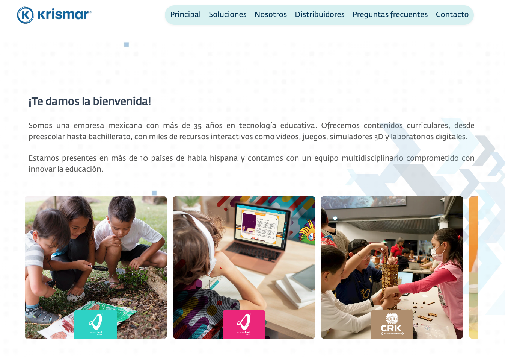
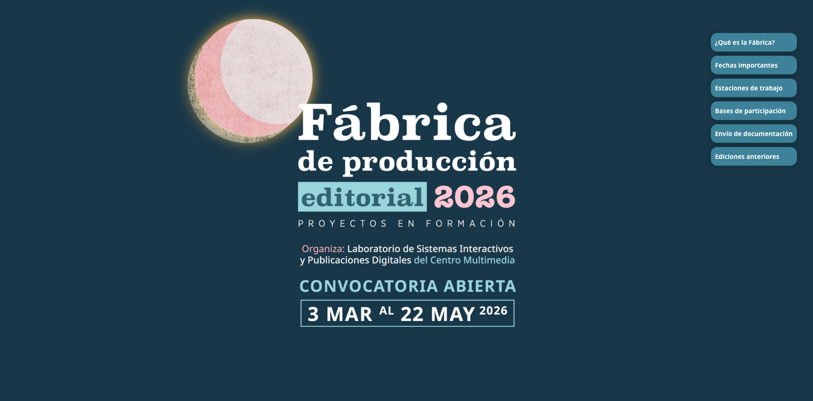
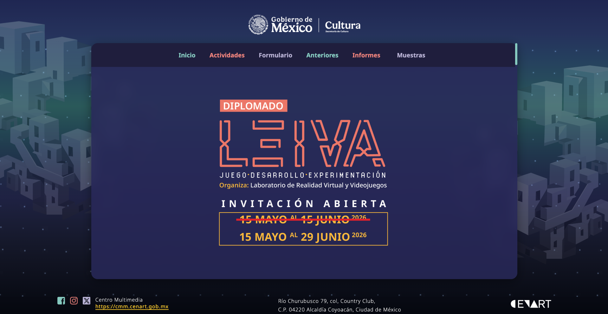
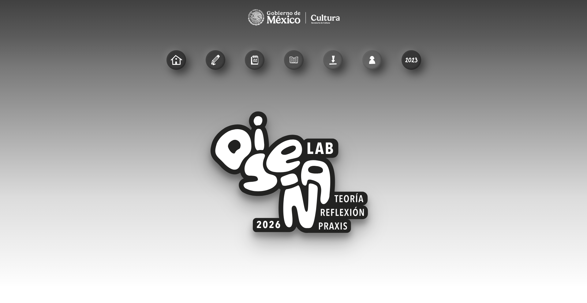
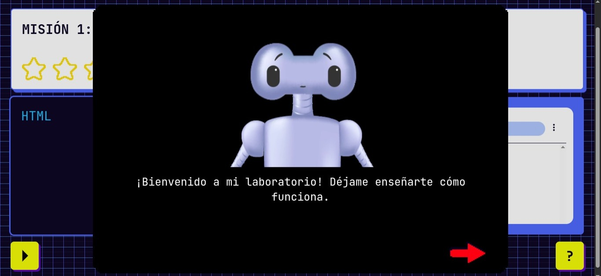

Zulim Miguel
Maquetadora web & Frontend
Convierto diseños en interfaces vivas. De Figma al navegador, sin perder ni un detalle en el camino.
HTML5 · CSS3 · JavaScript · Tailwind CSS · Figma · Git/GitHub
Sobre mí
Maquetadora Front-End con más de un año y medio de experiencia y formación en arte y comunicación digital. Convierto diseños de Figma e Illustrator en sitios responsivos, accesibles e interactivos con HTML, CSS y JavaScript.
Resuelvo que un buen diseño llegue al navegador sin perder fidelidad ni rendimiento: en el Centro Multimedia del CENART bajé una página de unos 15 MB a menos de 1 MB, llevé su SEO a 100 y detecté y cerré una brecha de acceso en el sitio institucional.
Soy la mejor opción para equipos de diseño y desarrollo de organizaciones grandes, como banca o instituciones, que valoran el detalle, la accesibilidad y la seguridad.
Proyectos
-

Sitio institucional completo maquetado desde un Figma interactivo: menús, submenús, animaciones y SVG, 100 % responsivo con Flexbox y Grid. 4 meses de trabajo en equipo con diseño y programación.
Ver proyecto (se abre en una pestaña nueva) -

Sitio institucional maquetado a través de archivo illustrator. Propuse e implementé un modo día/noche con JavaScript y variables CSS. La optimicé: SEO de 92 a 100 y accesibilidad de 87 a 93.
Ver proyecto (se abre en una pestaña nueva) -

Cámaras y movimientos 3D, animaciones y fondos dinámicos con JavaScript. Diseño y maquetación en conjunto.
Ver proyecto (se abre en una pestaña nueva) -

Pasé la página de 15 MB a menos de 1 MB con carga diferida del video y WebP. SEO de 92 a 100, accesibilidad de 90 a 95 e interactividad en SVG que propuse.
Ver proyecto (se abre en una pestaña nueva) -

Juego educativo en español que enseña HTML y CSS a niños: cada etiqueta que aprenden (h1, h2, p, img) le devuelve una pieza a Codi, un robot. Al completar las 4 misiones se desbloquea un modo libre con editor de CSS y exportación en ZIP. Hecho desde cero con HTML, CSS y JavaScript, sin frameworks.